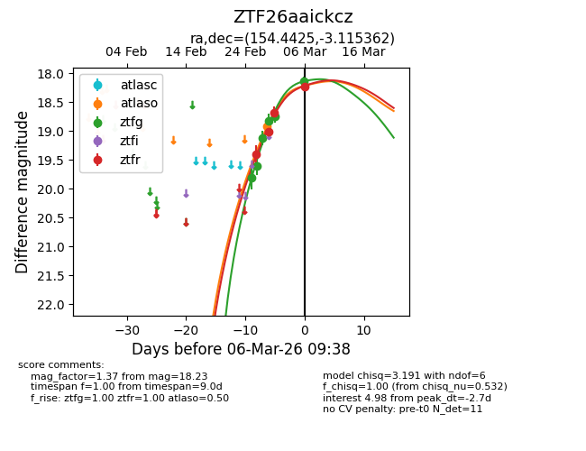
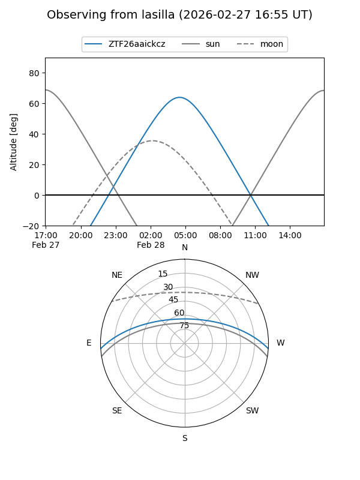
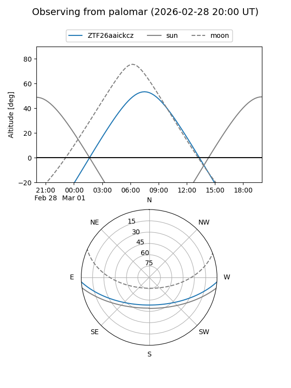
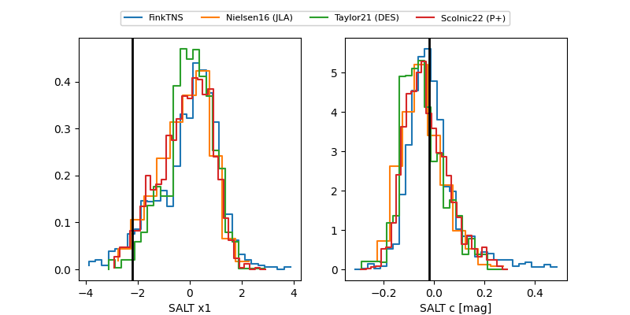

ZTF26aaickcz
Target ZTF26aaickcz at 2026-03-06 09:39
Aliases and brokers:
FINK: link
Lasair: link
ALeRCE: link
alt names
ZTF26aaickcz (ztf,fink_ztf)
Coordinates:
equatorial (ra, dec) = 154.4425,-3.11536
equatorial (HMS+DMS) = 10:17:46.20,-03:06:55.30
galactic (l, b) = (246.0729,+42.18311)
Flags:
Photometry:
last atlaso=18.93, ztfg=18.13, ztfr=18.23
1 atlaso, 6 ztfg, 4 ztfr detections
Lightcurve

Visibility


Additional plots
